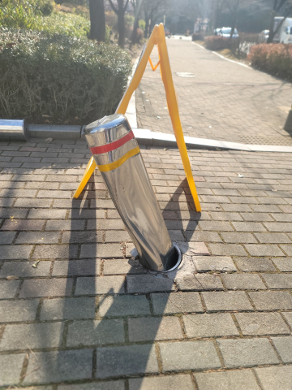
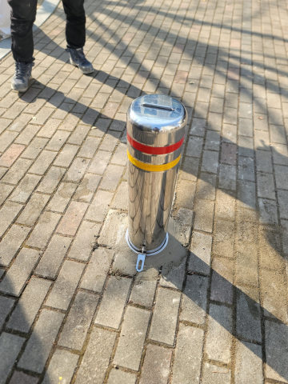

볼라드 설치·교체
차량이 드나드는 구역에 맞춰 볼라드를 튼튼하게 고정합니다.


광주시 문형동 볼라드 상담
차량 진입을 통제하거나 보행 공간을 구분할 때 설치합니다.

스텐 U자형·일자형·라운드형부터 스틸·우레탄 볼라드까지 설치 장소와 용도에 맞춰 선택할 수 있습니다.매립이동식·앙카이동식·앙카식·매립식 가운데 바닥 상태와 출입 목적에 맞는 방식으로 시공합니다.매립이동식은 바닥 천공 후 매립관을 삽입해 고정하며, 이동식은 제품 구조에 따라 분리·재설치와 자물쇠 잠금이 가능합니다.용접이 가능한 금속 볼라드는 상단에 고리를 달아 체인을 연결할 수 있습니다.
볼라드 시공 전·후 사진을 살펴보세요.
차량이 드나드는 구역에 맞춰 볼라드를 튼튼하게 고정합니다.


어떤 작업을 하나요?
주차장과 출입구의 차량·보행자 동선에 맞춰 볼라드의 형태와 간격을 정합니다.
차량이 닿기 쉬운 곳이나 야외에는 충격과 날씨에 강하고 눈에 잘 띄는 제품을 선택합니다.
차량 통행 방식과 바닥 상태에 맞춰 매립이동식·앙카이동식·앙카식·매립식 중 알맞은 방식으로 설치합니다.
용접이 가능한 금속 볼라드는 상단 고리와 체인을 연결할 수 있습니다.이동식은 자물쇠 잠금 제품도 있습니다.
설치·부분 교체 상담
현장 전체와 설치할 곳의 사진, 필요한 제품과 수량을 보내주세요. 설치부터 부분 교체까지 원하는 작업에 맞춰 상담해 드립니다.야간·주말 일정도 현장에 맞춰 상담합니다.
차량 진입을 제한하거나 보행 공간을 구분하는 볼라드는 설치 목적에 따라 형태와 고정 방식이 달라집니다.
매립이동식은 바닥 천공 후 매립관을 삽입해 고정합니다. 앙카이동식은 바닥에 받침 구조를 고정합니다. 두 방식 모두 제품에 따라 필요할 때 분리할 수 있습니다.
매립이동식·앙카이동식은 자물쇠 잠금이 가능한 제품을 선택하면 무단 분리와 분실 위험을 줄일 수 있습니다.
용접이 가능한 금속 볼라드는 요청에 따라 상단에 고리를 용접하고 체인을 연결해 차량 진입을 제한할 수 있습니다.
전기차 충전소 주변, 스쿨존, 물류센터, 주차장 출입구처럼 차량과 보행자의 동선이 만나는 곳에 설치합니다.
같은 지역의 다른 작업
다른 시공항목도 함께 살펴보세요.광주시 문형동 시공 안내로 이동합니다.
볼라드현재 보고 계신 시공 안내 논슬립패드같은 지역 시공 안내 보기 →
논슬립패드같은 지역 시공 안내 보기 → 반사경같은 지역 시공 안내 보기 →
반사경같은 지역 시공 안내 보기 → 아스콘부분보수같은 지역 시공 안내 보기 →
아스콘부분보수같은 지역 시공 안내 보기 → 주차금지봉같은 지역 시공 안내 보기 →
주차금지봉같은 지역 시공 안내 보기 → 차량진입판같은 지역 시공 안내 보기 →
차량진입판같은 지역 시공 안내 보기 → 카스토퍼같은 지역 시공 안내 보기 →
카스토퍼같은 지역 시공 안내 보기 → 코너보호대같은 지역 시공 안내 보기 →
코너보호대같은 지역 시공 안내 보기 → 차선규제봉같은 지역 시공 안내 보기 →
차선규제봉같은 지역 시공 안내 보기 → 표지판설치같은 지역 시공 안내 보기 →
표지판설치같은 지역 시공 안내 보기 →다른 지역의 설치·교체 작업도 편하게 문의해 주세요.